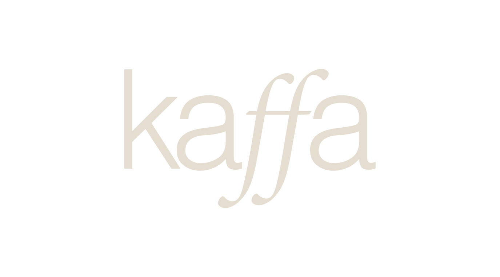
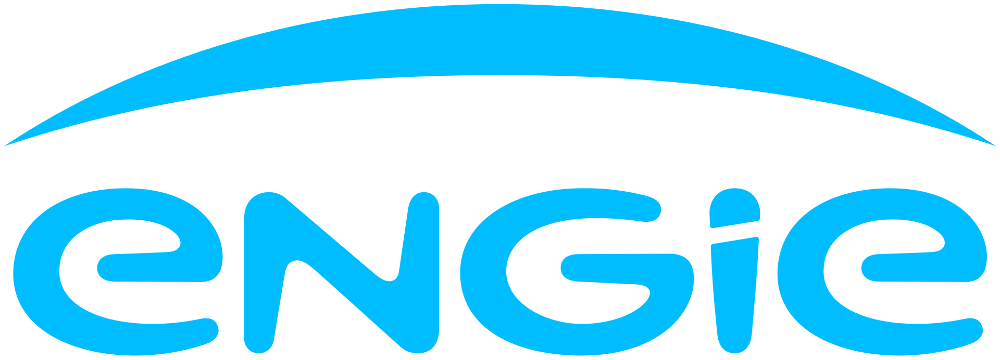
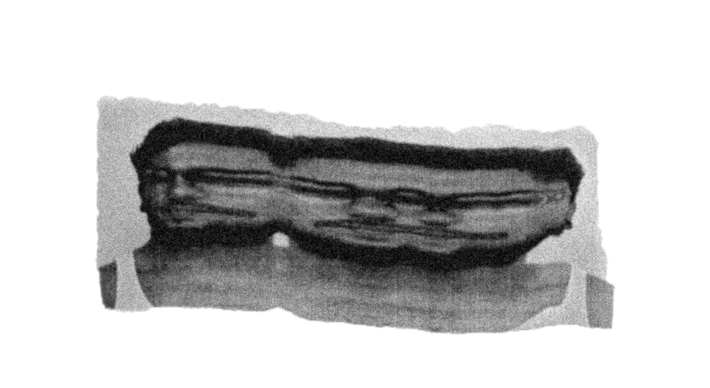

Ideas, stories and strategies turned into visual systems people can recognise, understand and remember.
7+ years building visual identities, packaging and digital design for hospitality, culture and research. Based in Porto, open to remote roles.


